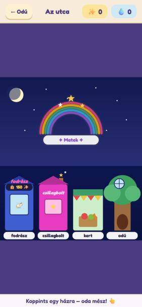

A Tündérbank ötödik házként kerül az utcára. Ha már átrajzoljuk, rendbe tesszük az elrendezést, és mozgást is kap az utca. A házak a gyerekek ismert rajzai maradnak.
Laptopon kétoldalt széles üres lila sáv marad, a házak a képernyő aljára szorulnak.

Telefonon fölül és alul marad nagy üres sáv, a házak a képernyő harmadán férnek el.
A baj oka: az utca egyetlen álló alakú kép, és minden képernyőre ugyanazt az alakot nagyítjuk. A laptop széles, a telefon nagyon magas, egyikre sem illik pontosan. Közben semmi sem mozog, csak a szivárvány lüktet.
A javaslat: kipróbálható
💻 Laptop (fekvő képernyő): széles utca
← OdúAz utca✨ 260💧 5
Koppints egy házra, és oda mész! 👆
📱 Telefon (álló képernyő): két házsor
← OdúAz utca✨ 260💧 5
Koppints egy házra! 👆
A rajzon a kirakatban 🦄 jel áll. A játékban ott a gyerek saját, felöltöztetett unikornisa látszik, ugyanúgy, mint most.
Mi változik
1. Elrendezés: a képernyő alakjához igazodik
Fekvő képernyőn (laptop, fekvő tablet) széles utca: mind az öt ház egy sorban áll, és a mostaninál kb. 30%-kal nagyobbak. Így sem kell keskenyebbre venni őket a bank miatt, ahogy a rendszerterv számolta.
Álló képernyőn (telefon) két házsor van: hátul a fodrász, a csillagbolt és a bank, elöl a kert és az odú, kicsit nagyobban. Kitölti a magas képernyőt, és minden ház könnyen eltalálható.
A játék magától választ a képernyő alakja szerint, és forgatáskor is átvált. Üres sáv nem marad: az ég és a föld a képernyő széléig ér.
A szivárvány-kapu (matek) és a felhőkert-lépcső ugyanott van fönt, ahol most. A felhőlépcső laptopon a jobb szélen, a bank fölött ereszkedik le.
2. Csinosítás: ugyanazok a rajzok, de élnek
A házak pontosan a mostani rajzok, csak a fények és a mozgás újak. A gyerekek az utcát ugyanannak fogják látni.
Ég: pislákoló csillagok, időnként átsuhan egy hullócsillag, a hold körül halvány fény.
Ablakok: a fodrász kirakata, a bolt ablaka és az odú kerek ablaka melegen izzik.
Csillagbolt: a kéményből csillagok szállnak fel. Ez a mostani kémény fölötti két csillag „életre keltve”.
Kert: leng a zászlófüzér. Odú: rezeg a lombkorona.
Utca: járda kőlapokkal, a házak között izzó utcai lámpák, a föld fölött szentjánosbogár-fények lebegnek.
Bank: a jóváhagyott rajzterv háza kicsiben: izzó ablakok, csillámló tábla, a bagoly néha kikukucskál. Ha a pulton még nincs ár, a többi zárt házhoz hasonló sötét címke van rajta: 🌙 hamarosan.
Aki a gépén kikapcsolta az animációkat, annál minden mozgás megáll, a kép marad.
3. Ami nem változik
Mit csinál a koppintás az egyes házakon, a szalon belépője, a felhőkert zára, a fejléc és a súgó-sor.
Döntések (2026-10-01)
Sorrend: fodrász · csillagbolt · kert · odú · bank a jobb szélen. Telefonon a bank a hátsó sor jobb szélén áll. ✔ Jóváhagyva
Két elrendezés: fekvő képernyőn széles utca, álló képernyőn két házsor. ✔ Jóváhagyva